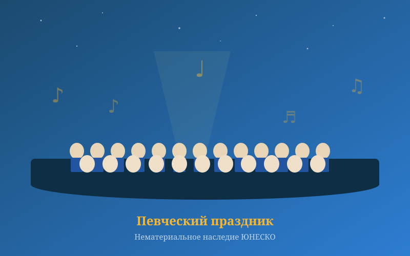
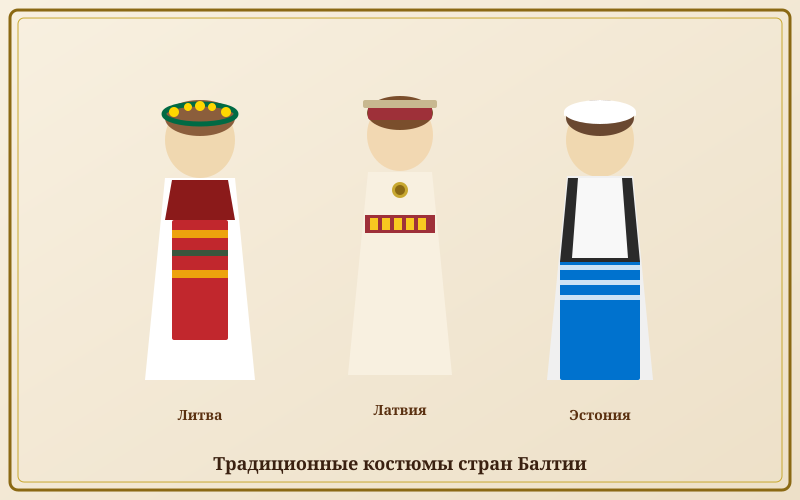
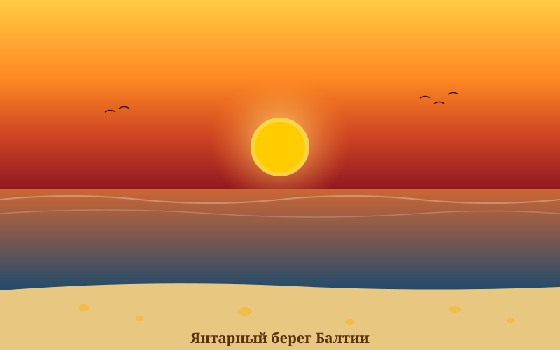

Иванов день (Лиго / Йонинес / Яанипяэв)
Самый важный летний праздник, отмечается 23–24 июня. Разжигание костров, плетение венков, ночные гуляния.
Традиции, праздники, искусство и национальная кухня трёх народов
Певческие праздники — важнейшая культурная традиция всех трёх стран Балтии. В 2003 году они были включены в Список нематериального культурного наследия ЮНЕСКО.
Традиция народных хоровых певческих праздников зародилась в XIX веке как форма национального самовыражения в период зарождения национальных движений.
🎵 «Поющая революция» — так называют период 1987–1991 годов, когда народы Балтии использовали певческие праздники как форму мирного протеста против советской оккупации.

Национальные традиции и праздники народов Балтии

Самый важный летний праздник, отмечается 23–24 июня. Разжигание костров, плетение венков, ночные гуляния.
Весенний праздник с ряжеными, блинами и сжиганием чучела зимы.
Главный зимний праздник с богатыми народными традициями, колядками и украшением дома.
Канклес (Литва), кокле (Латвия) и каннель (Эстония) — традиционные струнные инструменты, символы балтийской музыки.
Круговые и линейные танцы в национальных костюмах — неотъемлемая часть певческих праздников.
Ткачество, вышивка, плетение из соломы, обработка янтаря — ремёсла, передаваемые из поколения в поколение.
Эстонская традиционная дымная сауна включена в список ЮНЕСКО. Сауна — важнейший элемент быта всех балтийских народов.
«Калевипоэг» (эстонский), «Лачплесис» (латышский) и «Метай» Донелайтиса (литовский) — великие памятники балтийской литературы.
Средневековые замки, ганзейские купеческие дома, рижский стиль модерн и советское наследие сплетаются в уникальный архитектурный облик.
Традиционные блюда балтийских народов
🌾 Общие черты: Балтийская кухня основана на картофеле, ржи, молочных продуктах, рыбе Балтийского моря и свинине. Копчёные продукты, квашеная капуста и рожь — основа кулинарного наследия региона.
Три уникальных языка с разными лингвистическими корнями
Один из древнейших живых индоевропейских языков. Сохранил черты праиндоевропейского языка, утраченные в других языках.
"Labas rytas" — Доброе утро
"Ačiū" — Спасибо
"Lietuva" — Литва
Сложность для русскоговорящих
Вместе с литовским входит в балтийскую ветвь индоевропейских языков. Имеет богатую систему падежей и несколько уникальных звуков.
"Labrīt" — Доброе утро
"Paldies" — Спасибо
"Latvija" — Латвия
Сложность для русскоговорящих
Принадлежит к финно-угорской языковой семье — родственен финскому и венгерскому, но не имеет ничего общего с литовским и латышским. В языке 14 падежей и нет рода.
"Tere hommikust" — Доброе утро | "Aitäh" — Спасибо | "Eesti" — Эстония
Сложность для русскоговорящих

Янтарь — окаменелая смола хвойных деревьев, которым 40–50 миллионов лет. Балтийский янтарь считается одним из лучших в мире и добывается преимущественно в Литве и Латвии.
💛 Юодкранте, Литва — «Янтарная столица» мира. Здесь находится единственный в своём роде музей янтаря на открытом воздухе.